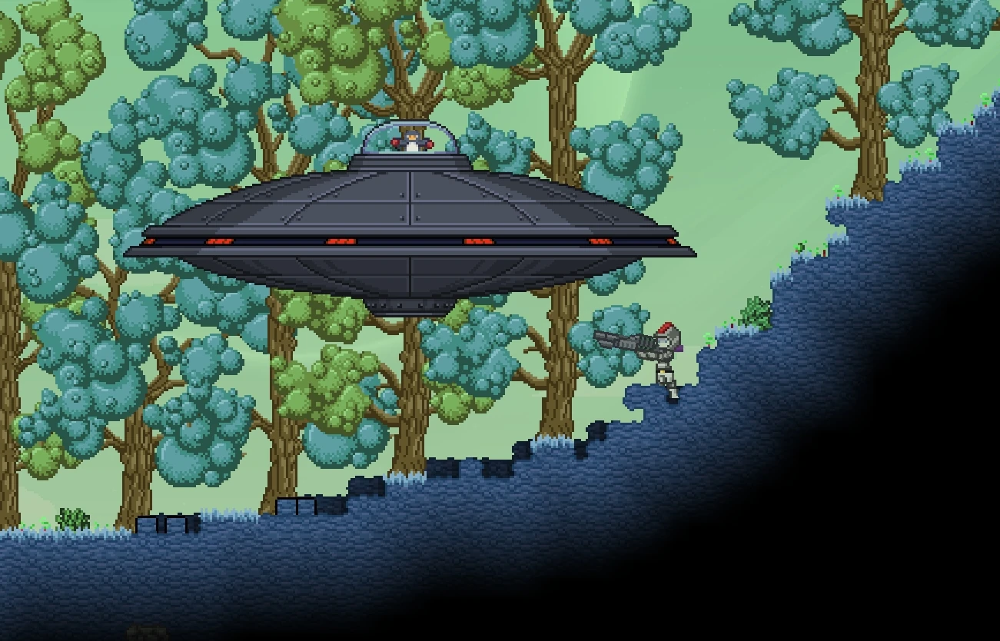

Starbound was advertised as a succesor and improvement upon Terraria, one of the best selling games of all time. However, given that you've likely never heard of it, this dream did not go through. Funded and released, but the fame expected and glamour was not granted. Starbound lacked part of what made Terraria so iconic and memorable. But what it does have Terraria cannot even light a candle to.

The biggest difference between the two is Starbound is a high space sci-fi adventure. Dealing with a galaxy thousands of years ahead of our own, where humanity isn't alone in the universe. They collaborate and fight with the Simian like Apex, the aquatic Hylotls, the brutish Florian, the ancient Avian, the regressive Glitch, and the mysterious Novakids. All having thier own cultures, homeworlds, legends, settlements. And this is reflected in the players ship, which varies based on what race they chose at the beggining. While this is a superficial difference ultimatley, it is apart of Starbounds's greatest strengths, flavour.
The monsters you as the player face vary heavily! From the silly penguin general, to the malignant stain on the world that is the final boss and antagonist. This variation is remiscent of Terraria. But. Unlike it, this mish mash, while interesting, does not serve it well.